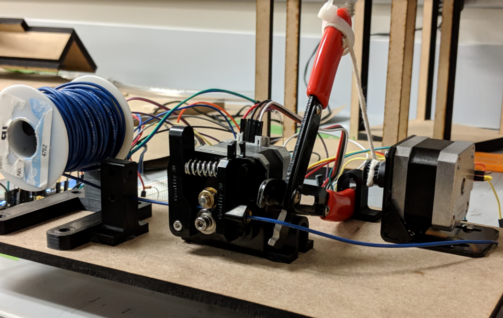
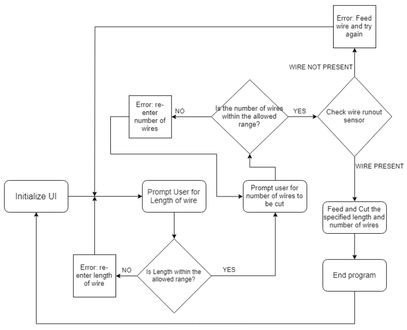

Automatic Wire Cutter
A project for my mechatronics class. This is a device that automatically cuts and dispenses user-specified lengths of wire for electrical or electronic prototyping and lab work.
For the final project of my Mechatronics class, we were tasked with creating a device with real-world usefulness that incorporated sensors and actuators controlled by a bare microcontroller chip (such as the ATMEGA 328). My team partner and I decided to design and build a device that could cut and dispense programmable lengths and number of wire for anyone working in an electrical or computer lab who needs specific lengths of stranded core wire for breadboarding or other uses.

The wire cutter is designed to be able to cut user-specified lengths and amounts of electronic wire from a spool with the goal of saving valuable time during laboratory experiments or prototyping. The design consists of two NEMA 17 - size stepper motors with the required mechanisms for feeding and cutting the wire, a 2.4” LCD touchscreen display, and a photoresistor which functions as a wire runout sensor. An image of the assembled project is shown below.
The base of the device is constructed out of MDF board that is laser cut. The spool holder is 3d printed, as is the bracket to hold the wire cutter, and the housing for the wire runout sensor. The electronic circuit is constructed on breadboards and connected with jumper wires. The three breadboards house the microcontroller circuit, the two motor drivers, and the display respectively.
The operation of the wire cutter is illustrated by the flowchart below.
The circuit schematic is shown below.

The schematic consists of the minimal Atmega328P circuit onto which other components are attached. The electronic components include two stepper motor drivers, an LED, a photoresistor, and a color TFT display. Power is provided by either a LiPo battery or a wall power supply. All components shared a common ground. This schematic was intended to be used to design a PCB layout before the design is sent to be fabricated. For the final design, we actually just used a breadboard to wire the circuit.
Below are some CAD renders of the project